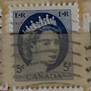
| SOURCE | TITLE| IMAGE MATCH | click to source page |
| www.ebay.com | Canada Stamp Queen Elizabeth II 5c Used Blue | eBay | 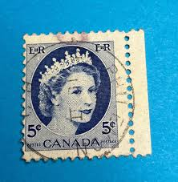 |
| www.mysticstamp.com | 341 - 1954 Canada - Mystic Stamp Company | 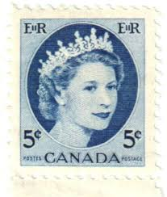 |
| www.ebay.com | Used NH Canada Queen Elizabeth II Stamp Blue 5c Sc# 341 1954 ... | 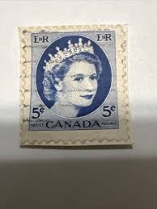 |
| www.mercari.com | 1955 overprinted Canada G 5 cent stamp USPS | Mercari | 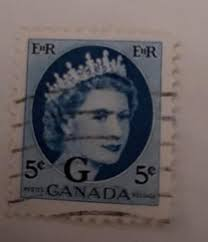 |
| www.hipstamp.com | Canada #341 Queen Elizabeth II; Used | Canada, General Issue ... | 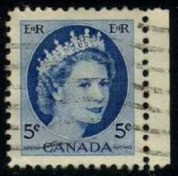 |
| www.ebay.com | Canada - 1954 - Queen Elizabeth II - Great Shape - 5 C ... | 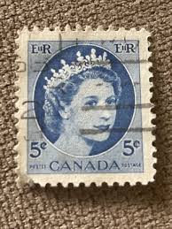 |
| www.ebid.net | 1954 Canada, Queen Elizabeth II, 5c blue, pair of used ... | 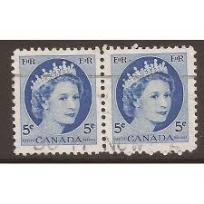 |
| www.alamy.com | CANADA - CIRCA 1954: a stamp printed in Canada shows Queen ... | 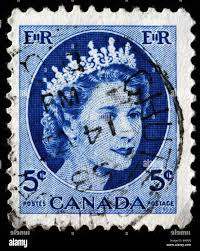 |
| www.etsy.com | Queen Elizabeth II Stamps, 4 X Unused Canada Stamps - Etsy | 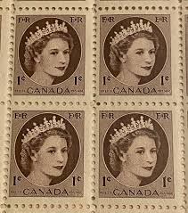 |
| www.facebook.com | Tangleflags, Saskatchewan: Origin of Post Office Name | 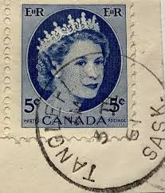 |
| www.alamy.com | Canada Postage Stamp - 1954 Stock Photo - Alamy | 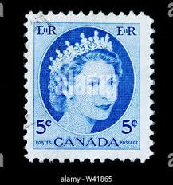 |
| www.youtube.com | Most Valuable Stamps In Canada - Part 7 Including 20c Olive ... | 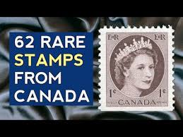 |
| www.linns.com | Canada has issued 95 stamps to hail its 89-year-old monarch | 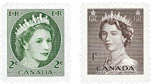 |
| www.hipstamp.com | Canada 341 Queen Elizabeth II, Wilding Portrait 5¢ 1954 ... | 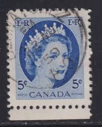 |
| www.etsy.com | Set of 50 Queen Elizabeth Stamps - Canada - 1954 - Green ... | 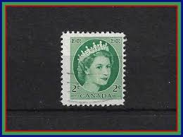 |
| www.old-stamps.com | Queen Elizabeth II - Postes - Postage / 1954 | 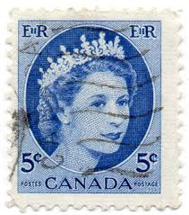 |
| findyourstampsvalue.com | Value of queen elizabeth canada 5 cent stamps | 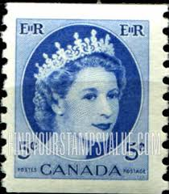 |
| www.ebay.com | Canada 1954-5c Queen Elizabeth II-Blue-Light Cancel | eBay | 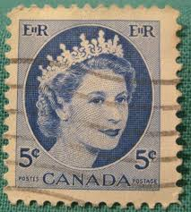 |
| in.pinterest.com | 24 Old Stamp sostage stamp collecting ideas | stamp ... | 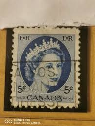 |
| www.reddit.com | Small Ballpoint pen drawing of a Definitive Canadian stamp ... | 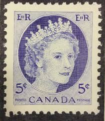 |
| www.mysticstamp.com | O44 - 1955 Canada - Mystic Stamp Company | 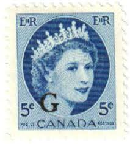 |
| www.mercari.com | 1971 GREAT BRITAIN, QUEEN ELIZABETH II Pink | Mercari | 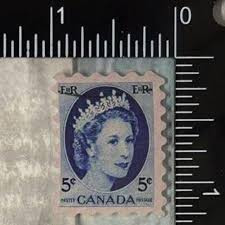 |
| www.ebid.net | Canada 1954 Queen Elizabeth II 4c Used Stamp. QE II on ... | 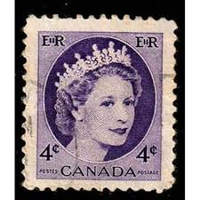 |
| www.facebook.com | Why is there a perforation on UK stamps? | 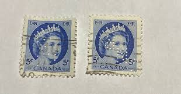 |
| monnaiesjdcoin.ca | STAMPS | 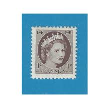 |
| www.youtube.com | Rare Canadian postage stamps - YouTube | 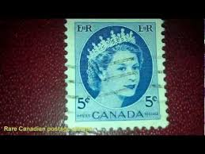 |
| www.dreamstime.com | Vintage Queen Elizabeth II Postage Stamp Editorial Stock ... | 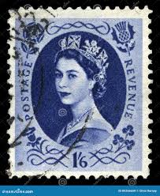 |
| en.wikipedia.org | File:Stamp Canada 1954 5c QE2.jpg - Wikipedia | 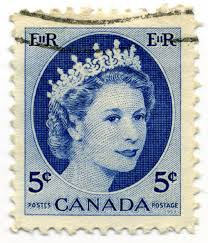 |
| www.shutterstock.com | 3+ Thousand British Stamp Images Royalty-Free Images, Stock ... | 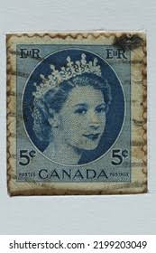 |
| stampbears.net | This is a Study on the Errors ,Odditties and Freaks Stamps ... | 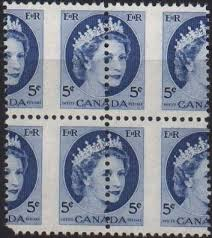 |
| postagestampguide.com | Queen Elizabeth II - Green - Ribbed Horizontally - Canada ... |  |
| home.heinonline.org | Uneasy Lies the Head That Wears 'The Crown' - HeinOnline Blog | 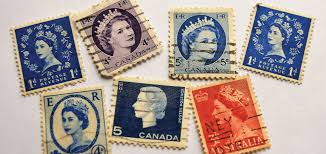 |
| www.old-stamps.com | Queen Elizabeth II - Postes - Postage / 1954 | 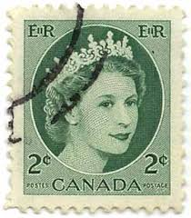 |
| www.hipstamp.com | Canada 1954 - U - Scott #340 * | Canada, General Issue Stamp ... | 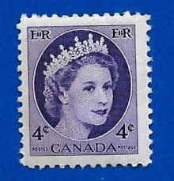 |
| www.ebay.com | Canada Stamp Queen Elizabeth II 5c Used 341 | eBay | 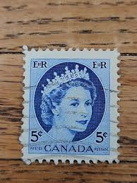 |
| www.vistastamps.com | Canada Stamps - O - Official for sale | Vista Stamps | 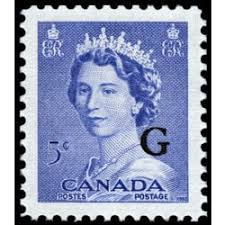 |
| www.showgard.com | Featured Stamp & Coin Collecting Supplies | 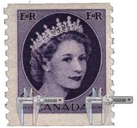 |
| www.arpinphilately.com | Buy O - Official #O44 - Queen Elizabeth II "Wilding ... | 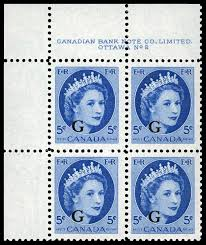 |
| www.allnumis.com | 1 Cent Elizabeth II 1954, Queen Elizabeth II - Canada ... | 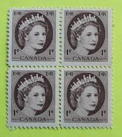 |
| postalmuseum.si.edu | Coronation Items | National Postal Museum | 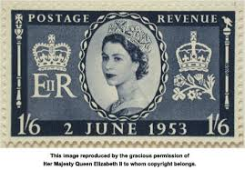 |
| www.bwdavis.ca | Canada - CNR Perfins - Canadian Stamps and collectables of ... | 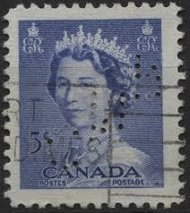 |
| www.delcampe.net | 1952-.... Reign of Elizabeth II - Canada 1954 MNH Sc 348 5c ... | 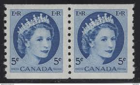 |
| www.alamy.com | Photo of a Canadian postage stamp Queen Elizabeth II - 1954 ... | 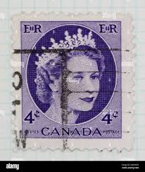 |
| www.istockphoto.com | 280+ Queen Elizabeth Ii Postage Stamp Stock Photos, Pictures ... | 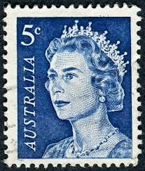 |
| www.facebook.com | History of Valor, Saskatchewan, and its former community | 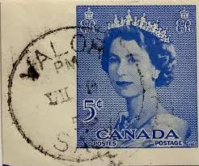 |
| www.postalmuseum.org | Elizabeth II Stamp Histories - The Postal Museum |  |
| www.linns.com | Modern stamp collecting myths debunked | 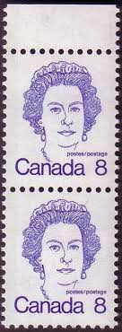 |
| www.pinterest.com | Discover 10 Stamps and rare stamps ideas | postal stamps ... | |
| www.ebay.com | Canada Postage ~ Queen Elizabeth II ~ Blue 5¢ Stamp ... | 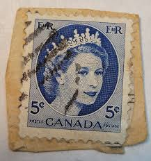 |
| www.etsy.com | Queen Elizabeth Stamps - Set of 50 Vintage Canada - Blue ... | 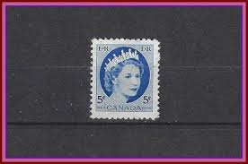 |
| postagestampguide.com | Queen Elizabeth II - Violet Blue - Canada Postage Stamp | 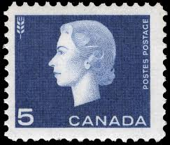 |
| stinkypaws.myshopify.com | Queen Elizabeth Stamps Postcard – Postal Happy!! | 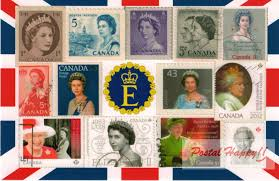 |
| www.arpinphilately.com | Buy O - Official #O40ii - Queen Elizabeth II "Wilding ... | |
| www.hipstamp.com | Canada #348 Queen Elizabeth II-Wilding Portrait Coil Nice ... | |
| www.firstpost.com | World Postal Day 2024: 8 most valuable stamps in the world | |
| www.alamy.com | Canada postage stamps hi-res stock photography and images ... | |
| www.ebid.net | 1954 Canada, Queen Elizabeth II, 5c blue, used stamp #6 on ... | |
| www.ebay.com | Canada Queen Elizabeth II (1954), Wilding Portrait, Used ... | |
| postagestampguide.com | 1954 Canadian Stamps | |
| www.alamy.com | Postage stamp from Canada in the Queen Elizabeth II ... |
{kind=link}